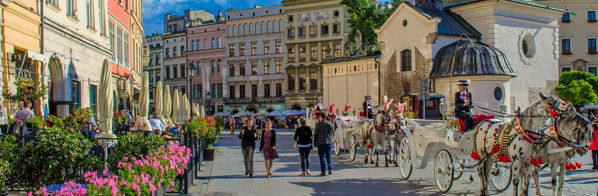
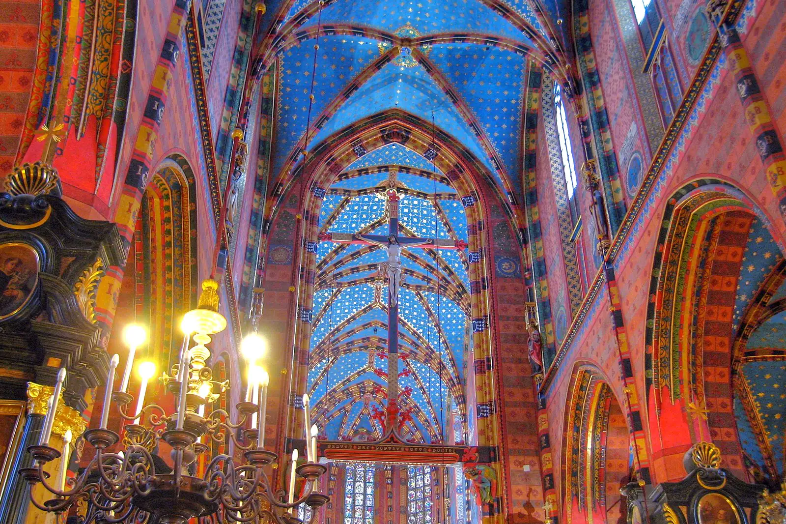

Home
Things to do
Hotels
Information
Contact Us

Places to visit
Krakow Main Market Square
Krakow’s Old Town

St. Mary’s Basilica
Oskar Schindler’s Factory
Auschwitz
Wawel Royal Castle
Wawel Dragon
Wieliczka Salt Mine
Kazimieriz
Hotels in Krakow
Venetian House Aparthotel
Crystal Suites
Batory Family Hotel
Novotel Krakow Centrum
Restaurants in Krakow
Pod Wawelem Restauracja
Restauracja Miod Malina
Klimaty Poludnia
Restauracja Biala Roza
Ratuszowa Krzysztof Janarek